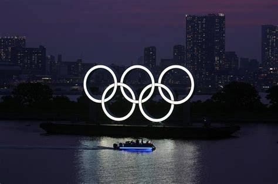

Vodič kroz sportove
Povijest sporta
Povijest: Početci športskih natjecanja sežu u doba prapovijesti. Prednost onih koji su bolje
trčali, skakali, bacali, plivali ili gađali bila je neosporna, pa su se zato te djelatnosti
vježbale kao sastavni dio borbe za održanje i vojno obrazovanje. Proces djelomičnog izdvajanja igara od tih izravno
praktičnih ciljeva i njihovo pretvaranje u zasebni, često ritualni aspekt života zajednice, trajao je tisućljećima.
S razvojem civilizacije u igrama su se pojavili i posebni predmeti kao
lopte, batovi,
štapovi i kugle, a natjecanja su se održavala na posebno izgrađenim
prostorima (igralištima, borilištima).
Što je sport?
Sport danas predstavlja organiziranu fizičku aktivnost koja uključuje natjecanje, rekreaciju
i osobni razvoj. Osim što potiče zdravlje i kondiciju, sport razvija timski duh, samodisciplinu, poštovanje
prema protivniku i osjećaj zajedništva. U suvremenom društvu sport ima i društvenu, kulturnu i ekonomsku ulogu — okuplja
ljude različitih nacija i kultura te promiče vrijednosti fer-pleja i suradnje.
Sport također pozitivno utječe na rad srca i pluća. Tijekom aktivnosti pluća preuzimaju kisik
O2 i dopremaju ga u mišiće, što povećava energiju i izdržljivost te potiče lučenje
endorfina1, tzv. hormona sreće.
Bazični sportovi
-
Atletika — Trčanja, skokovi, hodačke i bacačke discipline. Zbog svoje sveobuhvatnosti naziva se
kraljicom sportova. Atletskim vježbama stječe se fizička snaga, izdržljivost, brzina i okretnost, a učvršćuju se i svojstva
volje kao što su hrabrost, odlučnost i
upornost.
-
Plivanje — aktivira gotovo sve mišiće u tijelu i odlično je za osobe koje žele trenirati bez prevelikog opterećenja
na zglobove. Osim fizičkih koristi, plivanje pruža osjećaj mira i opuštanja, a istodobno jača srce i pluća. Plivači razvijaju
izdržljivost i preciznu tehniku disanja, što doprinosi boljoj kontroli tijela i fokusu.
-
Gimnastika — sustav odabranih tjelesnih vježbi, katkad uz uporabu pomagala i sprava, kojima je svrha razvoj,
povećavanje i održavanje čovjekovih motoričkih sposobnosti, postizanje okretnosti, gipkosti, brzine i koordinacije pokreta,
snage i izdržljivosti te jačanje zdravlja. Gimnastičari razvijaju iznimnu kontrolu tijela i ravnotežu.
-
Džudo — borilački šport za muškarce i žene, koji je u Japanu 1882. utemeljio Jigoro Kano kao suvremeni nastavak
starojapanske borilačke vještine džiju-džicu. Cilj je borbe da se protivnik baci na leđa ili bok, primjenjujući dopuštene
zahvate. Džudo potiče samokontrolu, poštovanje i mentalnu snagu.

Prednosti redovitog bavljenja sportom
- Fizičke koristi: bolja kondicija, jači mišići i zdravije srce.
- Mentalne koristi: smanjenje stresa, bolja koncentracija i samopouzdanje.
- Društvene koristi: timski rad, suradnja i poštovanje.
Usporedba bazičnih sportova
| Sport |
Karakteristike |
Pogodno za |
| Vrsta aktivnosti |
Intenzitet |
| Atletika |
Kardio |
Visok |
Mlade i natjecatelje |
| Plivanje |
Kardio + izdržljivost |
Srednji |
Sve dobne skupine |
| Gimnastika |
Snaga i koordinacija |
Visok |
Djeca i sportaši |
| Džudo |
Borilački sport |
Srednji–visok |
Sportaše |
Kontakt i prijava na trening